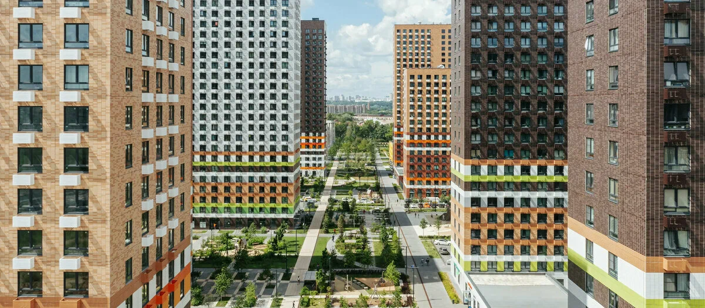

CleanПарк — порядок в каждом доме!
Чистота, которую вы заслужили в ЖК Люблинский Парк
Профессиональный клининг. Мы создаем пространство, в котором дышится легко и живется с удовольствием.

Профессиональный клининг. Мы создаем пространство, в котором дышится легко и живется с удовольствием.
Регулярное поддержание чистоты для вашего комфорта.
Глубокое очищение каждого уголка вашей квартиры.
Тщательное удаление строительной пыли и следов материалов.
* Итоговая стоимость может измениться после уточнения деталей менеджером.
Забронировать уборку.png)
Вернем вашему дому панорамный вид. Профессиональная мойка окон любой сложности в ЖК Люблинский Парк.
Полное удаление пыли, сложных пятен и въевшейся грязи со всех поверхностей в квартире.
Продезинфицированные санитарные зоны и бережное использование сертифицированной химии.
Кристально чистые стекла, зеркала и глянцевые фасады, пропускающие максимум света.
Устранение неприятных запахов и долгое ощущение порядка и абсолютного уюта в каждой комнате.
Мы находимся и работаем преимущественно в ЖК Люблинский Парк. Для нас это значит быть всегда на связи с нашими клиентами. Если вам нужен качественный клининг в ЖК Люблинский Парк или профессиональная уборка квартир в Люблинском Парке, мы — ваш лучший выбор.



Мы понимаем, что вы доверяете нам самое ценное — ваш дом. Поэтому мы выстроили систему контроля, которой можно доверять.
Все клинеры CleanПарк проходят строгую проверку службы безопасности.
Мы несем полную материальную ответственность за ваше имущество во время уборки.
Используем только сертифицированные гипоаллергенные средства.